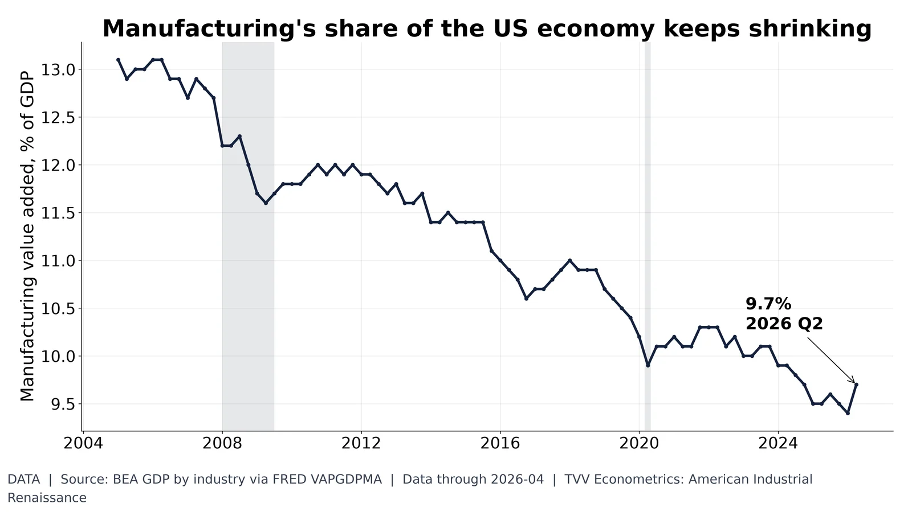
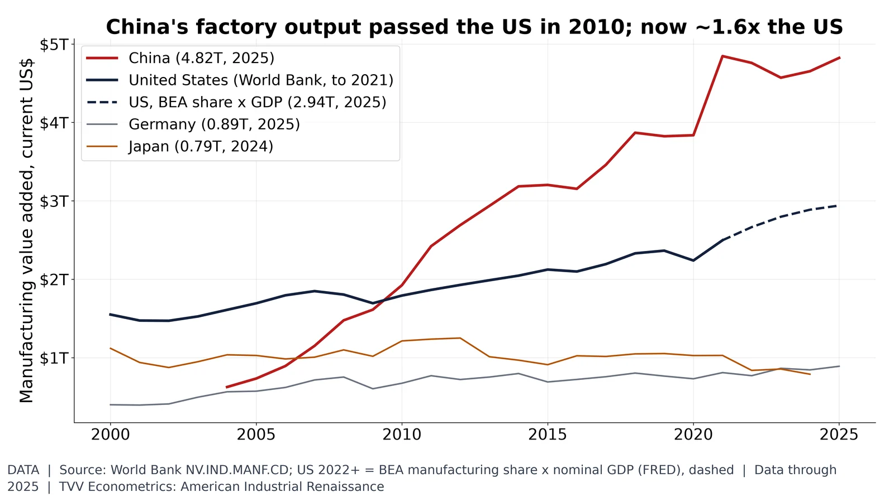
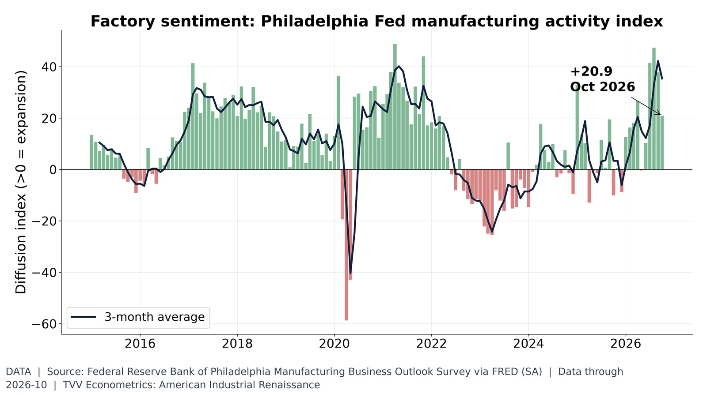

8. Global Comparison

Manufacturing value added 9.7% of GDP (Q2 2026), down from 13.1% in 2005. BEA via FRED.
Data | Data date: 2026-04
- 2005: manufacturing 13.1% of GDP (Data) https://fred.stlouisfed.org/series/VAPGDPMA
- Q2 2026: 9.7% (Data) https://fred.stlouisfed.org/series/VAPGDPMA
- Share fell while output was flat: IPMAN averaged 99.3 in 2005, 99.4 in Sep 2026 (Data) https://fred.stlouisfed.org/series/VAPGDPMA https://fred.stlouisfed.org/series/IPMAN

China manufacturing value added $4.82T (2025) vs US ~$2.94T. World Bank; BEA-derived US after 2021.
Data | Data date: 2025
- 2025: China manufacturing value added $4.82T (Data) https://data.worldbank.org/indicator/NV.IND.MANF.CD
- 2025: US about $2.94T, BEA-derived (Data) https://fred.stlouisfed.org/series/VAPGDPMA https://fred.stlouisfed.org/series/GDP
- China passed the US in 2010 ($1.92T vs $1.79T); gap $2.35T by 2021, last US World Bank year (Data) https://data.worldbank.org/indicator/NV.IND.MANF.CD
Sources: https://data.worldbank.org/indicator/NV.IND.MANF.CD https://fred.stlouisfed.org/series/VAPGDPMA https://fred.stlouisfed.org/series/GDP

Philadelphia Fed current activity +20.9 (Oct 2026); above zero means expansion. Regional proxy for ISM.
Data | Data date: 2026-10
- Oct 2026: Philadelphia Fed current activity +20.9 (Data) https://fred.stlouisfed.org/series/GACDFSA066MSFRBPHI
- Above zero means expansion (Data) https://www.philadelphiafed.org/surveys-and-data/regional-economic-analysis/manufacturing-business-outlook-survey
- ISM PMI history is not open data, so TVV uses this regional survey as a proxy (Interpretation)
Sources: https://fred.stlouisfed.org/series/GACDFSA066MSFRBPHI https://www.philadelphiafed.org/surveys-and-data/regional-economic-analysis/manufacturing-business-outlook-survey